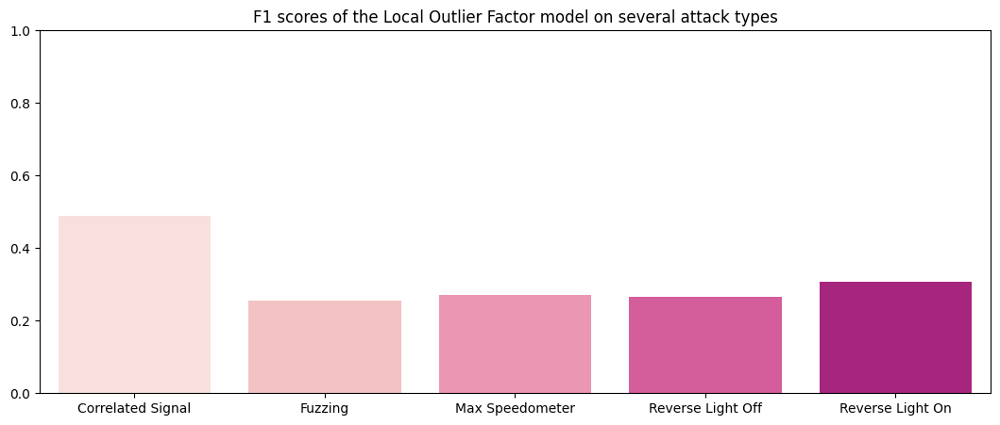

Detecting Attacks on CAN Data
Heads up: this article is an overview of this project. The code, along with explanations in markdown cells and comments, can be found hereThe Task
The Controller Area Network (CAN) is currently the most widely-used in-vehicle networking protocol. CAN is a bi-directional, multi-master, serial bus that uses UTP cabling to ensure reliability in electromagnetically noisy environments.
It provides an effective method for the components of a vehicle called the Electronic Control Units (ECU) to communicate among themselves, as opposed to traditional point-to-point wiring. It is also used in industrial applications as the basis for Devicenet, reducing the wiring needed between a control system and I/O devices.
While it provides a means to communicate reliably, CAN is not known for security. Modern vehicles allow you to plug in devices that can communicate on this network through the OBD-II port or some other port like the USB. Also, some of the devices in modern vehicles that use the CAN are connected to the internet, allowing external attacks in various forms. These attacks include Replay, Spoofing, Denial of Service (DOS) and so on.
The task in this project is to detect attacks on the CAN.
This will be done using different methods. The methods are:
- Frequency-based detection
Frequency-based methods use the increase in CAN transmission during attacks as the heuristic for detection. - Payload-based detection
Payload-based methods read the data that is transmitted and detect when the data is unusual or unexpected. I will implement two payload-based detection models, one using the Local Outlier Factor algorithm (density estimation) and the second using an autoencoder (reconstruction error)
The Dataset
The dataset used in this project is the **Real ORNL Automotive Dynamometer (ROAD) CAN Intrusion Dataset**, from (Verma et al., 2020). It can be found here. The dataset consists of over 3.5 hours of an (unspecified) vehicle’s CAN data. ROAD contains ambient data recorded during a diverse set of activities, and attacks of increasing stealth with multiple variants and instances of real fuzzing, fabrication, and unique advanced attacks, as well as simulated masquerade attacks. In the paper, the authors discuss that the purpose of the dataset is to provide a CAN benchmark dataset free of the problems of previous public datasets such as the lack of comparability and the inconsistency of CAN message intervals due to the insertion of synthetic data post-recording.
The dataset consists of three folders: ambient, attacks and signal extractions.
Ambient data is ground truth — a recording of CAN transmission in the vehicle during regular (attack-free) driving. Several log files are provided but each log is either a recording of highway driving or on a dynamometer (dyno, for short).
The signal extractions folder contains the same CAN data found in the ambient and attack folders, except that the signals have already been translated from hexadecimal to decimal numbers.
The attacks in the dataset are:
- Accelerator attack
This is an exploit of a vulnerability particular to the vehicle the authors tested. The CAN data of the exploit is not given, rather the CAN transmission as the vehicle suffers the exploit. Because of its uniqueness, this attack is not included in the data I used to train the intrusion detection systems. - Correlated signal attack
The single ID message communicating the four wheels’ speeds (each is a two-byte signal) is injected with four false wheel speed values that are all pairwise very different. This effectively kills the car— it rolls to a stop and inhibits the driver from effecting acceleration, usually until the car is restarted. - Fuzzing attack
The authors mounted the less stealthy version of the fuzzing attack, injecting frames with random IDs (cycling in order from 0x000 to 0x255) with maximum payloads (0xFFFFFFFFFFFFFFFF) every .005s (as opposed to only injected IDs seen in ambient data). Many physical effects of this attack were observed—accelerator pedal is impotent, dash and lights activated, seat positions move, etc. By injecting messages with maximal payload, the authors prevented incidental ECU bus-off. With the exception of the accelerator attack, every other attack targets an ID. - Max engine coolant temperature attack
The authors target the engine coolant signal (one byte), modifying the signal value to be the maximum (0xFF). The result is that the “engine coolant too high” warning light on the dashboard turns on. - Max speedometer attack
The speedometer signal (one byte) is targeted. The authors modified this signal value to be the maximum (0xFF), causing the speedometer to falsely display a maximum value. - Reverse light attacks
A binary (one bit) signal communicating the state of the reverse lights (on/off) is targeted. The authors perform two slight variations of the attack, where they manipulate the value to off while the car is in Reverse or on when the car is in Drive. The consequence is that the reverse lights do not reflect what gear the car is using.
For all attacks except the accelerator attack, both original fabrication and masquerade versions were provided by the authors. The Fabrication attacks are the attacks as they took place in ***flam*** fashion. Flam attacks, introduced by Hoppe, Kiltz, and Dittmann (2011), are a clever way to game the Controller Area Network by injecting malicious data immediately after authentic ID transmission so that malicious data can be read as though it came from the valid ID. The indirect effect is that there are more messages transmitted during attacks. This side effect is why the first approach I will use, the frequency-based detection, may be effective at detecting attacks.
The masquerade version contained only the spoofed data when attacks occurred, because the authors performed some post-processing to remove the normal transmission of the targeted ID's, without violating the CAN protocol. Note that for masquerade attacks, frequency-based methods are not likely to work.
For training, tuning and testing, fabrication (flam) data will be used. The masquerade version of the dataset will be used for final validation.
An Overview of the Methods
All three methods will solve the problem of intrusion detection by framing it as a novelty detection problem. With novelty detection, any data point that does not conform to the properties of data the algorithm was presented with during training is considered novel (in this case, an attack).
Why novelty detection?
The problem with attack data is that they resemble normal data, making them difficult to detect. Consider the following attacks:
- Denial of Service (DOS)
A DOS attack occurs when data is transmitted so many times using a high priority ID e.g `0`, so that proper functioning of the CAN is inhibited. The payload may even be regular signals, even if the ID is not regularly seen. - Replay attack
A replay attack is the repeated transmission of data from a single ID to fool the protocol, launch a masquerade attack etc. The ID and payload may be valid, however the ECU has been compromised.
This presents a question — how does an algorithm tell this kind of data apart from regular, normal data? The answer to this question is a principle backing many implementations of CAN intrusion detection systems in research: the context of attack transmission is different from regular transmission. Here are some context clues for when there is an attack:
- Usually, attacks increase CAN transmission rates. This is demonstrated in (Young, Olufowobi, Bloom & Zambreno, 2019) and is in fact the basis of method 1.
- Some arbitration ID's are not seen as often, or even ever. Perhaps an increase in transmission rates from an ID indicates an anomaly. What happens when an arbitration ID that never transmits normally suddenly starts transmitting? Will that help identify anomalies?
- Attack data can contain weird payloads. Take for instance the fuzzing and targeted ID attacks.
Methods 2 and 3 operate using the second and third context clues. It is therefore reasonable to study the context of regular transmission and use these clues to discriminate the transmission of attacks. Hence, the framing of the problem as novelty detection.
Scoring and Testing the methods
It is not enough that a method detects anomalies. If the model were to predict wrongly most of the time, it would be annoying. We want the model to detect as many anomalies but not to the point where there are so many spurious detections. Hence we want a model that scores a high true positive rate for the attack class and a low false positive rate so we don't have an incessant detector. We want a model that balances precision and recall. Thus, the F1 score is a good metric.
A Pattern to the Three Approaches
For uniformity, each method will be modeled as a class that implements the following methods:
__init__()
While the different methods may create different attributes and call different methods upon object initialization, the different classes initialize a common attribute:attack_f1.attack_f1is a dictionary to store the F1 scores of each model on the different attack datasets. These values are visualized using thechart_f1()method.fit()
The different methods follow a common principle: learn the representation of normal activity. Thefit()method learns this representation differently for each method: for method 1 (message frequency detection), it learns the normal rate; for method 2 (local outlier factor), it learns local densities of normal data; for method 3 (autoencoder), it learns a latent representation of normal data to arrive at a consistent error of reconstruction.detect_anomalies()
This method uses the model's internal representation of normal data to detect an anomaly. When predictions have been made, it prints the classification report and stores the F1 score of the model on the target class in the model'sattack_f1attribute.chart_f1()
Each model defines achart_f1()method to visualize the performance of the model on the different attack datasets as a barplot of F1 values.
The uniformity of the three methods allows us to define a single testing function, test_method, that runs the
detect_anomalies() method for each attack type and visualizes their F1 scores:
Method 1: Frequency-based Detection
Young, Olufowobi, Bloom & Zambreno (2019) propose that a more than double increase in the frequency of CAN message transmission is a simple indicator that there are anomalies in a CAN bus.
To implement this idea, a class, Freq, is defined. It defines a window (here, one second) and determines the
average number of normal messages transmitted in that window. At inference time, if the frequency is greater than a
given threshold, there is an anomaly. Remember the first context clue?
Note that this method only cares about how many messages were transmitted in each window and not what those
messages were. For this, a dummy feature containing only the numeric value 1 is created and used to count the
number of messages per second.
That average number of messages per second during normal CAN transmission is stored as normal_rate and then used
in anomaly detection at inference time.
Results (pre-tuning)
F1 Scores of the Frequency Detection method: Correlated Signal : 0.0 Fuzzing : 0.0 Max Speedometer : 0.0 Reverse Light Off : 0.0 Reverse Light On : 0.0

Tuning
The authors' decision to make the threshold `2` (meaning that when the transmission rate doubles, there is an attack) may have been influenced by the nature of attacks they studied: synthetic injection attacks added in post-processing. It will be useful to use a more lenient value for threshold.
Let's set the threshold value to 1.003 (so if there are on average 1405 messages per second, 1410 messages in a single second will indicate an attack). The tuning will be done on the same test data but evaluated against the validation data to avoid data leakage.
F1 Scores of the Frequency Detection method:
Correlated Signal : 0.97674
Fuzzing : 0.66667
Max Speedometer : 1.0
Reverse Light Off : 1.0
Reverse Light On : 0.97674

Results (post-tuning)
F1 Scores of the Frequency Detection method: Correlated Signal : 0.97778 Fuzzing : 0.8 Max Speedometer : 1.0 Reverse Light Off : 1.0 Reverse Light On : 0.98701

Perfect! The frequency-based method was successful in detecting flam attacks in both the test and validation datasets, achieving near-perfect results.
Method 2: Density-based Detection
One of the more popular unsupervised algorithms for anomaly/novelty detection is the Local Outlier Factor proposed by Breunig, Kriegel, Ng, and Sander (2000). It works by comparing the local density of a point with the densities of its neighbors. It considers as outliers the samples that have a substantially lower density than their neighbors.
LOF performs the following steps to detect an anomaly:
- Choose the number of neighbors (k) to consider.
- For each point, find its k nearest neighbors.
- Compute the local reachability density (LRD) of each point. The LRD is the inverse of the average reachability distance of points around a point.
- Compute the local outlier factor (LOF) of each point. The LOF is the ratio of the average LRD of a point's neighbors to the point's own LRD.
- Points with a high LOF score are considered outliers.
The LOF algorithm is a density-based outlier detection algorithm. This means that it assumes that outliers are points that are less dense than their neighbors.
Results (pre-tuning)
F1 Scores of the Local Outlier Factor method: Correlated Signal : 0.48994 Fuzzing : 0.25488 Max Speedometer : 0.26986 Reverse Light Off : 0.26673 Reverse Light On : 0.30615
Tuning
Results (post-tuning)
Method 3: Reconstruction Error
Autoencoders are a deep-learning architecture with a quirk: the input and output layers have the same number of neurons, with a bottleneck in between. Basically, they are trained to copy their input to their output. They can be used for several purposes such as compression, image denoising and anomaly detection. To use an autoencoder for anomaly detection, you would train it on normal data and define a threshold on the error of reconstruction to discriminate data it has not seen before. If the error of reconstruction of a data point exceeds that threshold, that data point is an anomaly. Fawaz Waselallah Alsaade and Mosleh Hmoud Al-Adhaileh (2023) employ the autoencoder approach to solve the intrusion detection problem for CAN data.
Let's define the `AutoEncoder` class. The threshold of choice is 3 standard deviations from the mean of errors of reconstruction i.e:
- Train the autoencoder on normal CAN data
- Reconstruct the input and obtain the errors of reconstruction, E, as an array/tensor
- Compute the standard deviation (denoted σ) of the errors
- Define the threshold as a z-score of 3, or 3σ. Thus if the absolute value of the error, e, is greater than 3 standard deviations from the mean of regular errors, the data point belongs to an attack.
For visual aid, any data point that falls in the 0.1% is determined an attack
 Source: M. W. Toews,CC BY 2.5, via Wikimedia Commons
Source: M. W. Toews,CC BY 2.5, via Wikimedia Commons
{kind=link}
Results (pre-tuning)
F1 Scores of the Autoencoder method: Correlated Signal : 0.22257 Fuzzing : 0.19137 Max Speedometer : 0.16274 Reverse Light Off : 0.17161 Reverse Light On : 0.20416